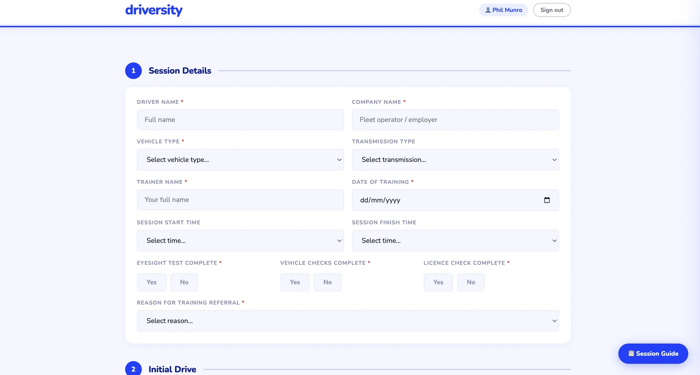
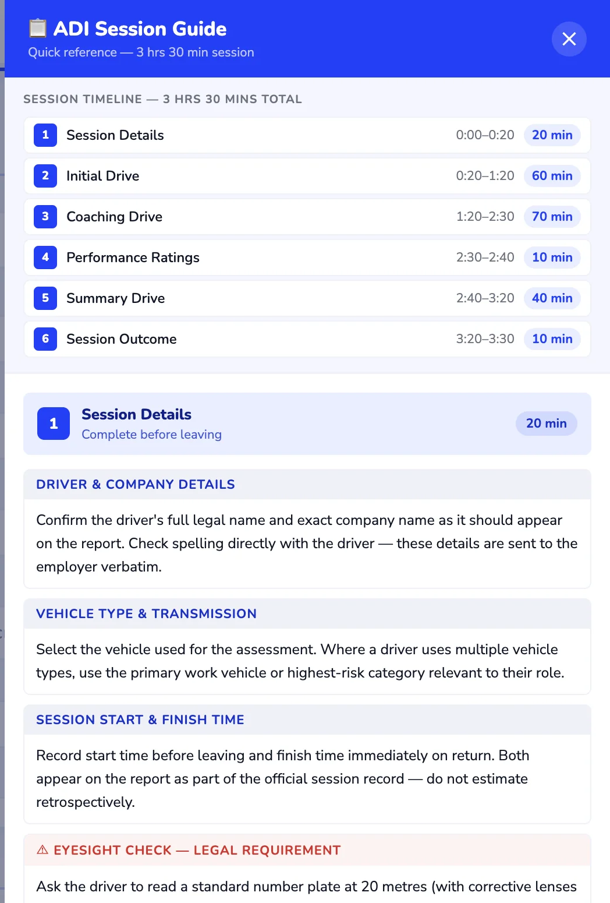
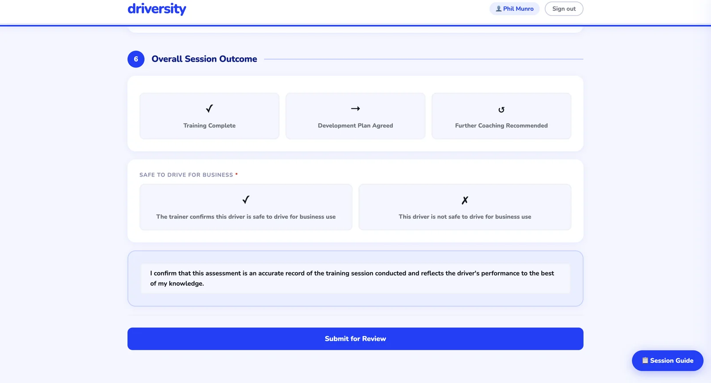
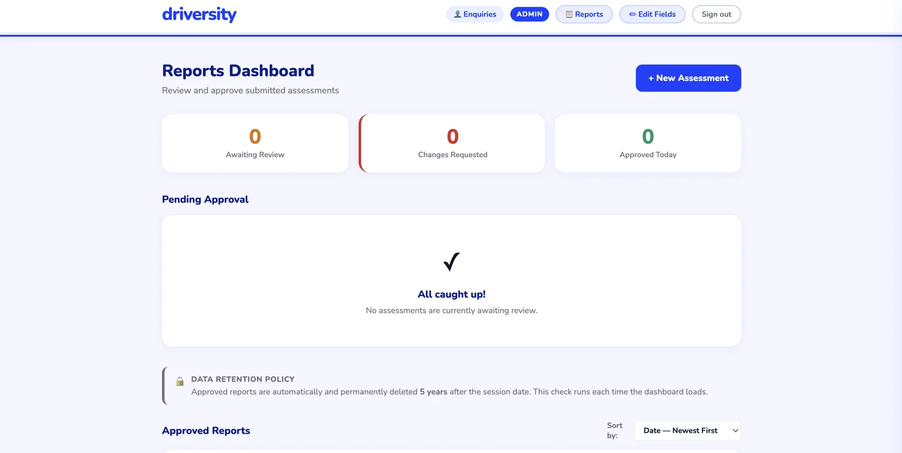

Case study — Driversity Training
Driversity Training assesses other companies' drivers out on the road and reports back to the employer. AXRIK built an assessment portal that guides trainers through every session — and turns each one into a professional, branded PDF report that reaches the client with a single click.
The problem
Assessors were filling in paper and Word templates on the road. Back at base, every assessment had to be retyped, formatted and checked before it could go to the employer — and no two reports ever looked quite the same.
The business needed assessments to be consistent, reviewable, and turned into a polished branded report every single time — without a day of admin between the drive and the client's inbox.
What we built




AI built in
Every AI feature has a manual fallback — the business never depends on AI to function, it just moves faster with it.
Polished, professional reports in the employer's inbox the same day instead of the same week — every one reviewed, every one consistent, every one arriving with a guide that helps the client act on it.
And because the whole journey lives in one portal — fill in, review, approve, send — the admin between the drive and the invoice has all but disappeared.